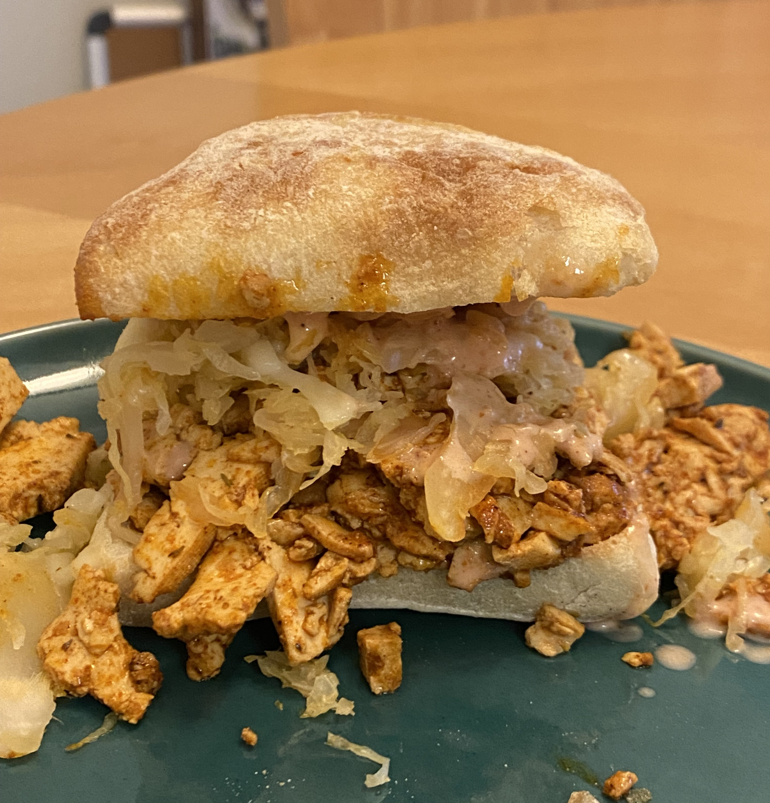

Ingredients
For Sandwich:
- 1 block extra firm tofu
- 1/3 cup soy sauce
- 2 tbsp olive oil
- 2 tbsp steak sauce
- 2 tsp mustard
- 2 tsp smoked paprika
- 1 tsp garlic powder
- 1 tsp dried thyme
- 1 tsp ground coriander
- 1/2 tsp black pepper
- Sliced bread, preferably rye, toasted
- 2 cups sauerkraut (trust the process)
- 2 slices vegan cheese or equivalent shredded cheese
For Sauce:
- 1/2 cup vegan mayonnaise
- 2 tbsp ketchup
- 2 tbsp pickle or sauerkraut juice
- 1 tsp dijon mustard
- 1 tsp paprika
- 1 tsp soy sauce
- 1 tsp garlic powder
Instructions
- Cut the tofu into very thin slices. Combine the soy sauce, olive oil, steak sauce, mustard, and spices and mix in the tofu to marinate.
- After the tofu has marinated for at least an hour, drain excess marinade and fry in a pan.
- While the tofu is cooking, prepare the other ingredients: toast the bread and make the sauce.
- Remove the tofu from the pan and place the sauerkraut in. Form the sauerkraut into 4 piles, top with cheese, and cover the pan with a lid until the sauerkraut shrinks and the cheese melts.
- Assemble the sandwiches and enjoy!